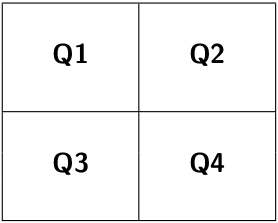
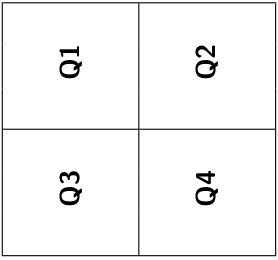
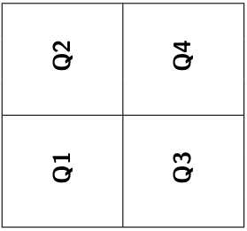
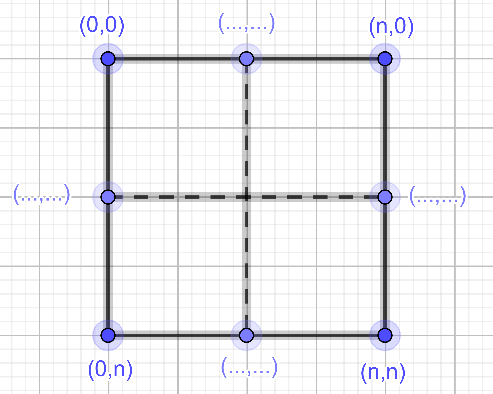
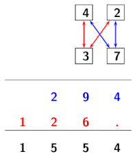

C4 Diviser pour régner
Activités
 Activité 1 : Recherche dans une liste :fontawesome-solid-history:{title='Retour sur des notions antérieures'}
Activité 1 : Recherche dans une liste :fontawesome-solid-history:{title='Retour sur des notions antérieures'}
Aide
Cette activité revient sur deux algorithmes de recherche d'un élément dans une liste déjà rencontrés en classe de première et sur la comparaison de leurs efficacités. En cas de difficultés, on pourra donc revenir sur les activités correspondantes :
-
Ecrire une fonction
recherche(x,l)qui en effectuant un parcours simple de la liste, renvoieTrueouFalseselon que l'élémentxse trouve ou non dans la listel. -
On suppose maintenant que la liste est triée, l'algorithme de recherche par dichotomie vue en classe de première consiste alors à
 partager la liste en deux listes de longueurs égales (à une unité près)
partager la liste en deux listes de longueurs égales (à une unité près)
 comparer l'élément recherché avec celui situé au milieu de la liste
comparer l'élément recherché avec celui situé au milieu de la liste
 en déduire dans quelle moitié poursuivre la recherche
en déduire dans quelle moitié poursuivre la recherche
On s'arrête lorsque la zone de recherche ne contient plus qu'un élément.- Faire fonctionner "à la main" cet algorithme pour rechercher
6dans[1,3,5,7,11,13]. - Programmer cet algorithme.
- Faire fonctionner "à la main" cet algorithme pour rechercher
-
Que dire de l'efficacité de ces deux algorithmes ?
Activité 2 : Tri fusion
-
Algorithmes de tri vus en première
- Rappeler rapidement le principe du tri par sélection vu en classe de première. Donner les étapes de cet algorithme pour trier la liste
[10,6,3,9,7,5] - Rappeler rapidement le principe du tri par insertion vu en classe de première. Donner les étapes de cet algorithme pour trier la liste
[10,6,3,9,7,5] - Quelle est la complexité de ces deux algorithmes ?
- Rappeler rapidement le principe du tri par sélection vu en classe de première. Donner les étapes de cet algorithme pour trier la liste
-
L'algorithme du tri fusion consiste à :
partager la liste en deux moitiés (à une unité près),
trier chacune des deux moitiés,
les fusionner pour obtenir la liste triée.
On a schématisé le tri de la liste[10,6,3,9,7,5]suivant ce principe ci-dessous :graph TD subgraph Partager en deux S["[10,6,3,9,7,5]"] --> S1["[10,6,3]"] S --> S2["[9,7,5]"] end subgraph Fusionner S1 -.Trier.-> T1["[3,6,10]"] S2 -.Trier.-> T2["[5,7,9]"] T1 --> T["[3,5,6,7,9,10]"] T2 --> T end- Le tri des deux moitiés est lui-même effectué par tri fusion, par conséquent que peut-on dire de cet algorithme ?
-
On a schématisé ci-dessous le fonctionnement complet de l'algorithme pour la liste
[10,6,3,9,7,5], recopier et compléter les cases manquantes.graph TD subgraph Partager en deux S["[10,6,3,9,7,5]"] --> S1["[10,6,3]"] S --> S2["[9,7,5]"] S1 --> S11["[10]"] S1 --> S12["[6,3]"] S2 --> S21["[9]"] S2 --> S22["[...,...]"] S12 --> S121["[6]"] S12 --> S122["[3]"] S22 --> S221["[...]"] S22 --> S222["[...]"] end subgraph Fusionner S121 --> T21["[...,...]"] S122 --> T21 S221 --> T22["[5,7]"] S222 --> T22["[5,7]"] S11 --> T1["[...,...,...]"] T21 --> T1 S21 --> T2["[...,...,...]"] T22 --> T2 T1 --> T["[3,5,6,7,9,10]"] T2 --> T end
-
Implémentation en Python
-
Programmer une fonction
partage(l)qui prend en argument une listelet renvoie les deux moitiésl1etl2(à une unité près) del. Par exemplepartage([3,7,5])renvoie[3]et[7,5].Aide
- Penser à utiliser les constructions de listes par compréhension
- Les slices de Python sont un moyen efficace d'effectuer le partage, mais leur connaissance n'est pas un attendu du programme de terminale. Les élèves intéressés pourront leur propre recherche sur le Web.
-
On donne ci-dessous une fonction
fusion(l1,l2)qui prend en argument deux listes déjà triéesl1etl2et renvoie la liste triéelfusion del1etl2:1 2 3 4 5 6 7 8 9 10 11 12 13 14 15 16 17 18
def fusion(l1,l2): ind1=0 ind2=0 l = [] while ind1<len(l1) and ind2<len(l2): if l1[ind1]<l2[ind2]: l.append(l1[ind1]) ind1+=1 else: l.append(l2[ind2]) ind2+=1 if ind1==len(l1): for k in range(ind2,len(l2)): l.append(l2[k]) else: for k in range(ind1,len(l1)): l.append(l1[k]) return l- Recopier et tester cette fonction.
- Quel est le rôle des variables
ind1etind2? - Ajouter un commentaire décrivant le rôle de la boucle
while. - Ajouter un commentaire décrivant le rôle des lignes 12 à 17.
-
En utilisant les deux fonctions précédentes, écrire une fonction
tri_fusion(l)qui implémente l'algorithme du tri fusion en Python.
Important
On montre que l'algorithme du tri fusion a une complexité en \(O(n\log(n))\), c'est donc un algorithme plus efficace que le tri par insertion ou le tri par sélection qui ont tous les deux une complexité en \(O(n^2)\).
Cours
-
Vous pouvez télécharger une copie au format pdf du diaporama de synthèse de cours présenté en classe :
Attention
Ce diaporama ne vous donne que quelques points de repères lors de vos révisions. Il devrait être complété par la relecture attentive de vos propres notes de cours et par une révision approfondie des exercices.
Exercices
Exercice 1 : Maximum des éléments d'une liste
On propose l'algorithme suivant pour la recherche du maximum des éléments d'une liste :
Partager la liste en deux moitiés l1 et l2
Chercher les maximums m1 de l1 et m2 de l2
En déduire le maximum m de l.
- Expliquer pourquoi cet algorithme fait partie de la méthode diviser pour régner.
- Cet algorithme est-il récursif ? Justifier.
- Ecrire une implémentation en Python de cet algorithme.
Exercice 2 : Inversions dans une liste
Cet exercice est extrait d'un sujet de bac de la session 2021
Dans un tableau Python d'entiers tab, on dit que le couple d'indice (i,j) forme une inversion lorsque i<j et tab[i]>tab[j]. On donne ci-dessous quelques exemples.
- Dans le tableau
[1,5,3,7]le couple d'indices(1,2)forme une inversion car5>3. Par contre, le couple(1,3)ne forme pas d'inversion car5<7.
Il n'y a qu'une inversion dans ce tableau - Il y a trois inversions sans le tableau
[1,6,2,7,3], à savoir les couples d'indices(1,2),(1,4)et(3,4). - On peut compter six inversions dans le tableau
[7,6,5,3]: les couples d'indices(0,1), (0,2), (0,3), (1,2), (1,3)et(2,3). On se propose dans cet exercice de déterminer le nombre d'inversions dans un tableau quelconque
Questions préliminaires
- Expliquer pourquoi le couple
(1,3)est une inversion dans le tableau[4,8,3,7]. - Justifier que le couple
(2,3)n'en est pas une.
Partie A : Méthode itérative
Le but de cette partie est d'ecrire une fonction itérative nombre_inversion qui renvoie le nombre d'inversions dans un tableau. Pour cela, on commence par écrire une fonction fonction1 qui sera ensuite utilisé pour écrire la fonction nombre_inversion.
-
On donne la fonction suivante.
def fonction1(tab, i): nb_elem = len(tab) cpt = 0 for j in range(i+1, nb_elem): if tab[j] < tab[i]: cpt += 1 return cpt-
Indiquer ce que renvoie la
fonction1(tab,i)dans les cas suivants :- Cas n°1 :
tab=[1,5,3,7]eti=0 - Cas n°2 :
tab=[1,5,3,7]eti=1 - Cas n°3 :
tab=[1,5,2,6,4]eti=1
- Cas n°1 :
-
Expliquer ce que permet de déterminer cette fonction.
-
-
En utilisant la fonction précédente, écrire une fonction
nombre_inversion(tab)qui prend en argument un tableau et renvoie le nombre d’inversions dans ce tableau. On donne ci-dessous les résultats attendus pour certains appels.>>> nombre_inversions([1,5,7]) 0 >>> nombre_inversions([1,6,7,2,3]) 3 >>> nombre_inversions([7,6,5,3]) 6 - Quelle est l’ordre de grandeur de la complexité en temps de l'algorithme obtenu ? Aucune justification n'est attendue.
Partie B : Méthode récursive
Le but de cette partie est de concevoir une version récursive de la fonction nombre_inverion. On définit pour cela des fonctions auxiliaires.
-
Donner le nom d'un algorithme de tri ayant une complexité meilleure que quadratique. Dans la suite de cet exercice, on suppose qu’on dispose d'une fonction
tri(tab)qui prend en argument un tableau et renvoie un tableau contenant les mêmes éléments rangés dans l'ordre croissant. -
Écrire une fonction
moitie_gauche(tab)qui prend en argument un tableau tab et renvoie un nouveau tableau contenant la moitié gauche de tab. Si le nombre d'éléments de tab est impair, l'élément du centre se trouve dans cette partie gauche. On donne ci-dessous les résultats attendus pour certains appels.Dans la suite, on suppose qu’on dispose de la fonction moitie_droite(tab) qui renvoie la moitié droite sans l’élément du milieu.>>> moitie_gauche([]) [] >>> moitie_gauche([4, 8, 3]) [4,8] >>> moitie_gauche ([4, 8, 3, 7]) [4,8] -
On suppose qu’une fonction
nb_inv_tab(tab1, tab2)a été écrite. Cette fonction renvoie le nombre d’inversions du tableau obtenu en mettant bout à bout les tableauxtab1ettab2, à condition quetab1ettab2soient triés dans l’ordre croissant. On donne ci-dessous deux exemples d’appel de cette fonction :En utilisant la fonction>>> nb_inv_tab([3,7,9],[2,10]) 3 >>> nb_inv_tab([7,9,13],[7,10,14]) 3nb_inv_tabet les questions précédentes, écrire une fonction récursivenb_inversions_rec(tab)qui permet de calculer le nombre d'inversions dans un tableau. Cette fonction renverra le même nombre quenombre_inversions(tab)de la partie A. On procédera de la façon suivante :- Séparer le tableau en deux tableaux de tailles égales (à une unité près).
- Appeler récursivement la fonction
nb_inversions_recpour compter le nombre d’inversions dans chacun des deux tableaux. - Trier les deux tableaux (on rappelle qu'une fonction de tri est déjà définie).
- Ajouter au nombre d'inversions précédemment comptées le nombre renvoyé par la fonction
nb_inv_tabavec pour arguments les deux tableaux triés.
Exercice 3 : Quart de tour d'une image
-
Pour faire tourner une image carré de côté \(2^n\) pixels d'un quart de tour à gauche, on propose la méthode suivante :
- Diviser l'image en quatre quarts Q1,Q2,Q3,Q4

- Faire tourner chacun des quarts d'un quart de tour à gauche

- Permuter chaque quart afin de le placer correctement

Expliquer pourquoi cette méthode est une illustration de la technique diviser pour régner.
- Diviser l'image en quatre quarts Q1,Q2,Q3,Q4
-
C'est algorithme est-il du type itératif ou récursif ? Justifier.
-
Découpage de l'image en quatres quarts à l'aide du module pil de manipulation d'images
- On a représenté une image carré de \(n\) pixels de côté avec le système de coordonnées d'une image dans le module pil. Quelles sont les coordonnées manquantes ?

-
La méthode
cropdu module pil permet d'extraire une portion rectangulaire d'une image en donnant les coordonnées des coins supérieur gauche et inférieur droit du rectangle. Compléter la fonction Python suivante qui prend en entrée une image et retourne les quatre quarts de cette image.from PIL import Image def partage_quart(image): n = image.width if n > 1: q1 = image.crop((0,0,n//2,n//2)) q2 = image.crop((...,...,...,...)) q3 = image.crop((...,...,...,...)) q4 = image.crop((...,...,...,...)) return q1,q2,q3,q4 -
Tester cette fonction (on pourra utiliser cette image carré)
Aide
- La création d'une image dans pil à partir d'un fichier s'effectue à l'aide de :
img_test = Image.open("mettre ici le nom du fichier") - La visualisation d'une image s'effectue à l'aide de :
img_test.show()
- La création d'une image dans pil à partir d'un fichier s'effectue à l'aide de :
-
Ajouter une instruction
assertpermettant de vérifier que l'image est carré (c'est à direimage.width==image.height) - Ajouter une instruction
assertpermettant de vérifier quenest pair.
- On a représenté une image carré de \(n\) pixels de côté avec le système de coordonnées d'une image dans le module pil. Quelles sont les coordonnées manquantes ?
-
Compléter puis tester la fonction python qui implémente l'algorithme décrit à la question 1.
def quart_tour(image): n = image.width # Partage de l'image en quatre quarts if n>1: q1,q2,q3,q4 = partage_quart(image) # Rotation de chacun des quarts rq1 = quart_tour(q1) rq2 = quart_tour(q2) rq3 = quart_tour(q3) rq4 = quart_tour(q4) # Reconstruction de l'image resultat = Image.new('RGB',image.size) resultat.paste(rq2,(0,0)) resultat.paste(...,(n//2,0)) resultat.paste(rq1,(...,...)) resultat.paste(...,(...,...)) return resultat else: return image
{kind=link}
Exercice 4 : Algorithme de Karatsuba
-
Principe de l'algorithme :
- On a posé ci-dessous la multiplication de deux nombres à deux chiffres : \(42 \times 37\), combien de multiplications de nombres à un chiffre (illustrés par les flèches) sont nécessaires à ce calcul ?

- Compléter le calcul en ligne correspond à l'opération ci-dessus :
\((40+2) \times (30+7) = (...\times...) + (...\times...) + (...\times...) + (...\times...)\) -
Si on multiplie deux nombres à \(n\) chiffres de la même façon, combien de multiplications de nombres à un chiffre sont nécessaires ?
-
En base 10, le produit \(P\) de deux nombres à \(2n\) chiffres peut s'écrire :
\(P=(a\times 10^n + b)(c\times 10^n + d) = ac\times 10^{2n} + (ad+bc)\times10^n + bd\)
Vérifier l'égalité :
\(P= ac\times 10^{2n} + \left(ac+bd-(a-b)(c-d)\right)\times10^n + bd\) -
Combien de multiplications sont nécessaires au calcul de \(P\) sous cette forme ?
- Calculer le produit \(42 \times 37\) sous cette forme.
- On a posé ci-dessous la multiplication de deux nombres à deux chiffres : \(42 \times 37\), combien de multiplications de nombres à un chiffre (illustrés par les flèches) sont nécessaires à ce calcul ?
-
Ecrire en Python une implémentation de l'algorithme de Karabutsa.
Aide
On pourra utiliser la fonction
nb_chiffres(n)ci-dessous qui renvoie le nombre de chiffres en base 10 de l'entier positifnfrom math import floor, log10 def nb_chiffres(n): assert type(n)=int, "L'argument doit être entier" assert n>=0, "L'argument doit être positif" if n>0: return floor(log10(n))+1 else: return 1Pour aller plus loin
Consulter la page wikipédia sur l'algorithme de Karatsuba
Exercice 5 : Quicksort
- Consulter la page wikipédia sur l'algorithme du tri rapide
- Expliquer rapidement le fonctionnement de cet algorithme de tri.
- Justifier qu'il utilise la méthode diviser pour régner.
- Donner un exemple du fonctionnement de cet algorithme sur une liste de petite taille.
- Proposer une implémentation en python de cet algorithme.